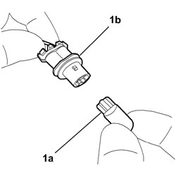

5550C54 BULB FOR ONE SIDE REPEATER UNIT LH OR RH - R.R
- Path
- Procedures > 55 ELECTRICAL EQUIPMENT > 5550 WARNING AND MANOEUVRING INDICATORS > 5550C DIRECTION INDICATORS/HAZARD WARNING LIGHTS > 5550C54 BULB FOR ONE SIDE REPEATER UNIT LH OR RH - R.R
- Kind
- repair procedure (removal / refitting; the operation number is the code)
- Applies to
- all engines; all production periods
- Interactive page
- https://sloeber94.github.io/elrnDB-fCrm/en/#/194000769
Applies to: all engines; all production periods
 Removing
Removing
 Refitting
RefittingOp. 5550C22 L/H OR R/H SIDE REPEATER (ONE) - R+R
1. Extract the bulb (1a) from the bulb holder (1b) (press fit).

Applies to: all engines; all production periods
Refitting
Removing- Check the condition of the bulb and make sure that it is clean.
- Fit the bulb in the bulb holder.
Op. 5550C22 L/H OR R/H SIDE REPEATER (ONE) - R+R
- Check that the bulb is working.